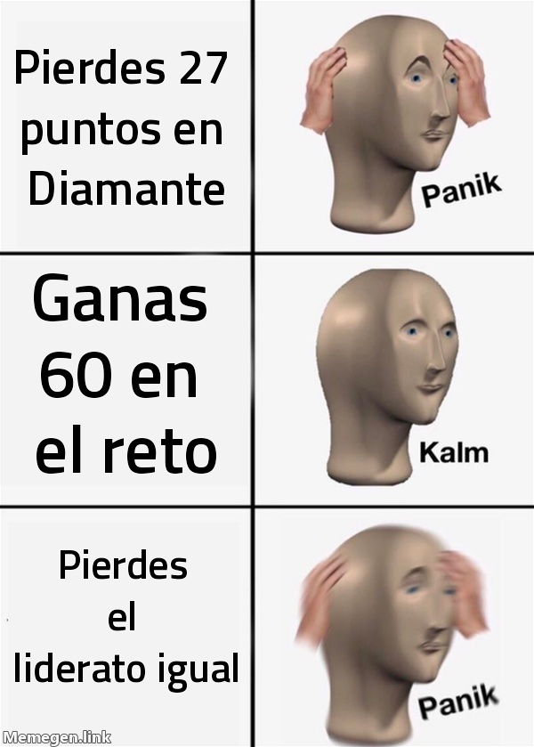

Diamante para perder, Platino para ganar
GSJoseador se deja 27 puntos en su cuenta principal, gana las dos del reto y aun así pierde el liderato.

El Comodín de la Grieta tiene dos vidas y las vive a la vez. En la cuenta de Diamante, la buena, la que enseña, GSJoseador jugó siete partidas entre las siete de la tarde y la medianoche y perdió cinco: Ornn, Xerath, Jinx, otra vez Xerath y Syndra. Cada campeón, una forma distinta de irse a la cama más pobre. La cuenta baja de Diamante II 89 a Diamante II 62.
La peor fue la Jinx de las 20:44. Enfrente, un Corki que acabó 13/2/14 y le sacó 5.765 de oro. GSJoseador, que se apuntó al reto prometiendo ser el «top damage del equipo», hizo el 13,3 % del daño del suyo con una tiradora que, si la dejan, derrite torres. No la dejaron.
Y luego está la otra vida. En la cuenta del desafío ganó las dos que jugó, sumó sesenta puntos y ascendió a Platino II. Una noche redonda, si no fuera porque esa misma mañana Saiko había ganado cinco con un robot y le quitó el trono sin despeinarse.
El Instituto Hextech trabaja con una hipótesis: GSJoseador juega mejor cuando la cuenta no es suya. La Syndra de las 23:31, heredada del Barón, la confirma: primera sangre entregada a los setenta y ocho segundos y derrota para cerrar la noche.
Se le busca una tercera cuenta. Por si acaso.